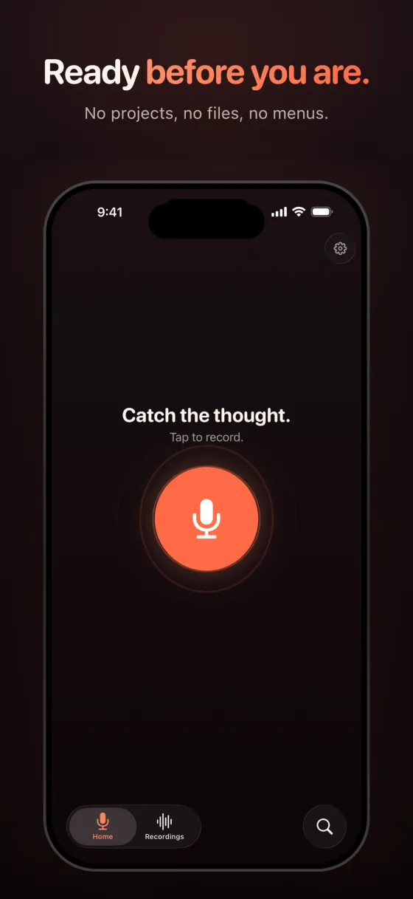
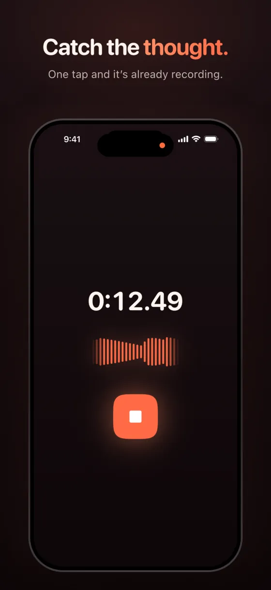
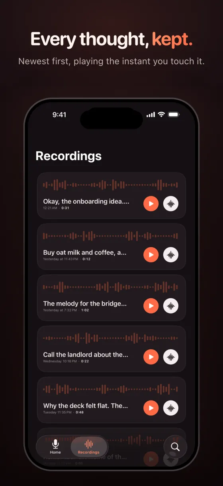
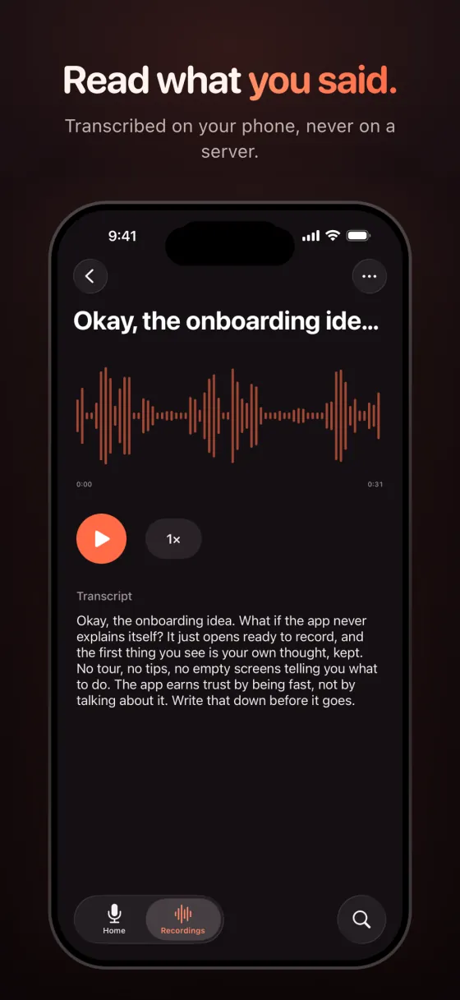
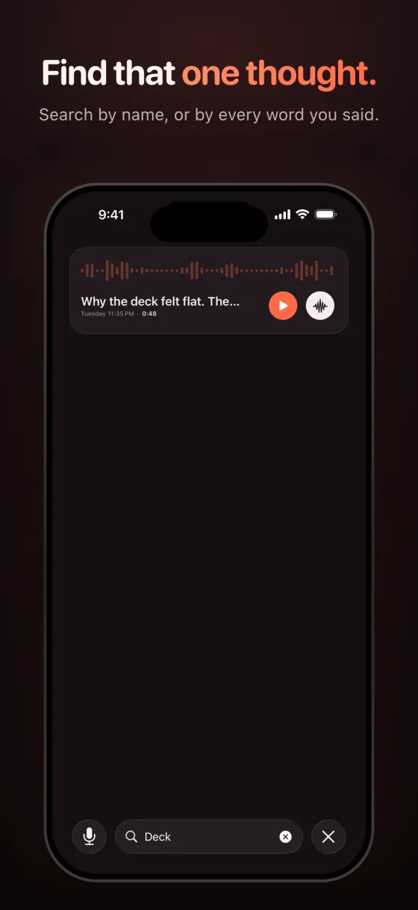
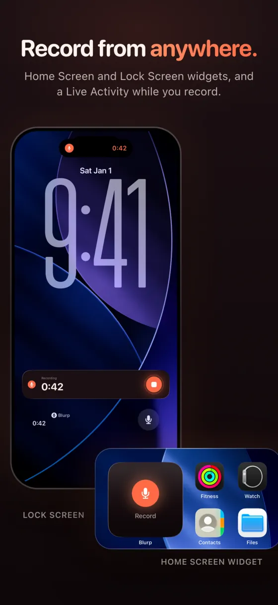

Productivity · Voice memos · iPhone
Some thoughts only exist for a few seconds.
Blurp is for those. Open it, tap once, talk. No project to create, no file to name, no second screen between you and the thing you were about to forget.
- Free to download
- iPhone
- No account
- Unlimited recording



What it does
Ready before you are.
Ready before you are
Open it and it is already recording-ready. One tap starts, one tap stops. There is no project to create, no file to name, no second screen between you and the thing you were about to forget.
A list you can actually read
Recordings land newest first, each one with its own waveform, playing the instant you touch it.
Find that one thought
Search finds recordings by name, or by what you said if you have turned transcripts on.
Read what you said
Transcripts turn speech into text on your phone, not on a server. Part of Blurp Plus.
Record from anywhere
Home Screen and Lock Screen widgets open Blurp already recording, and a Live Activity shows the recording while it runs. Widgets are part of Blurp Plus.
Yours, and only yours
Blurp does not summarise your recordings, title them for you, or rewrite them into something tidier. It records what you said and gives it back.
Screens
A look inside



Free and Plus
Free, and staying free.
Blurp is free to download and free to record with. Plus adds sync, transcripts and widgets.
Free, and staying free
- Unlimited recording
- The library, playback, renaming, deleting, search and sharing
- No limits on length or number
Blurp Plus
- iCloud Sync: your recordings on your other devices, through your own iCloud
- Transcripts: speech to text that runs on your phone, not on a server
- Widgets: Home Screen and Lock Screen widgets that open Blurp already recording
Questions
Good questions.
Is recording limited?
No. Recording is unlimited, with no limits on length or number.
Do I need an account?
No. There is no account, because there is nothing to sign in to.
Are my recordings uploaded?
Recordings live on your phone. If you turn on sync they go to your own private iCloud, which we cannot read. Transcription runs on the device, so audio is never uploaded to transcribe it.
Does Blurp summarise or rewrite what I say?
No. It records what you said and gives it back.
What does it need?
An iPhone with iOS 26 or later.
Support
Questions, bugs, ideas?
Email saripo.raitis@gmail.com. If something is not working, say which iPhone and iOS version you have.